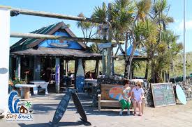

- 
Surfing and skateboarding both have decks, boards or planks. And they are fun to ride. One could be seen as a means of transportation; the other was also a Hawaiian past time. They share many tricks, and maneuvers, but they also breathe the same cultural values and lifestyle. If you surf and skate, you live the same dream. Both surfing and skateboarding are on the outside individualistic sports. In the ride, you are totally free - the designer, the architect of your own path. The frontier of your own wild west. Physically, they're both a standing sport. Unlike skiing, where our feet are side by side and toes facing north, surf and skate turn the torso 90 degrees and head your shoulder first. The perfect position for duck and roll. Which is what most surf and skate have in common: wipeouts. If you're going to be a skateboarder or a surfer be prepared to get beaten up. Be prepared to get roughed. Surfers and skaters require a certain type of girlfriend or boyfriend - someone who cares but lets them live freely. Some are so tough; they hide their scars and bruises and prefer not to admit their faults, their failures, and wipeouts. Others glorify the risk. Glorify the campfire, story telling tales of mass conquer and minor defeat. Maybe a free spirit move or maybe a reason to get out there and tame the demon. The wild horse of the Pacific or the King of concrete slab. More about surfing. The clothes you wear. The shoes you choose. The lack of shoes. The games you play. The people you meet. The fun you have. The stoke you can't control. The freedom you feel. The choices you make. The love you find. The pages you turn. And the friends you make are all like skateboarding.

Pula, a seafront city on the tip of Croatia’s Istrian Peninsula, is known for its protected harbor, beach-lined coast and Roman ruins. Settled in the prehistoric era and valued for its strategic location, Pula has been occupied, destroyed and rebuilt numerous times. The Romans, Ostrogoths and Venetians, as well as the Allied Forces in World War II, have each administered the city. Pula is Istria’s largest city, situated in the valley of seven hills, with extraordinary Adriatic views. And it’s a knockout to walk around: narrow cobbled streets that end, suddenly, with magnificent Roman buildings - including, notably, an enormous, spectacular amphitheatre, built to host 20,000 spectators between 27 - 68 AD, and is the only remaining Roman amphitheatre in the world with a complete circle wall.
Albufeira is a coastal city in the southern Algarve region of Portugal. It’s a former fishing village that has become a major holiday destination, with sandy beaches and a busy nightlife strip. Local fishermen now use the modern marina, also a base for diving, dolphin-watching and boat trips. It's surrounded by candy-colored apartments, with a waterfront promenade. Today, it's devoted to mass-market tourism, particularly cheap package deals, and has all but lost the vestiges of its past. Fishing boats are now moored at the ultramodern marina southwest of the centre, and the old town – with its pretty cobblestone streets and Moorish influences – is concealed by gaudy signs, English menu boards and rowdy bars.